grabit.
架一份只屬於你的 GrabIt
GrabIt 是一個 LINE Bot：把它拉進群組，大家傳的檔案、照片就會自動存進你的 Google 雲端硬碟，依檔名分到不同資料夾，還有一個手機、電腦都能用的管理網站。照著這份教學做，你會有一份完全用你自己帳號的 GrabIt。不用會寫程式，也不用開終端機。
- ⏱ 大約 1 小時
- 💰 全部免費（含 AI 分類）
- 💻 請用電腦設定
- 🔒 檔案只在你的雲端硬碟
先看看長什麼樣
群組裡有人傳檔案，GrabIt 會在幾秒內把它下載、改成好認的檔名、放進對的資料夾。你可以在管理網站上搜尋、搬移、分專案、貼標籤，也可以設定「檔名有什麼字，就放到哪裡」的規則。下面是範例資料的畫面。
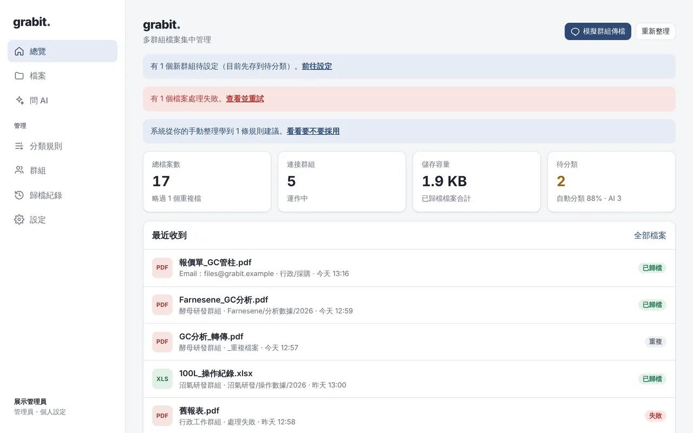
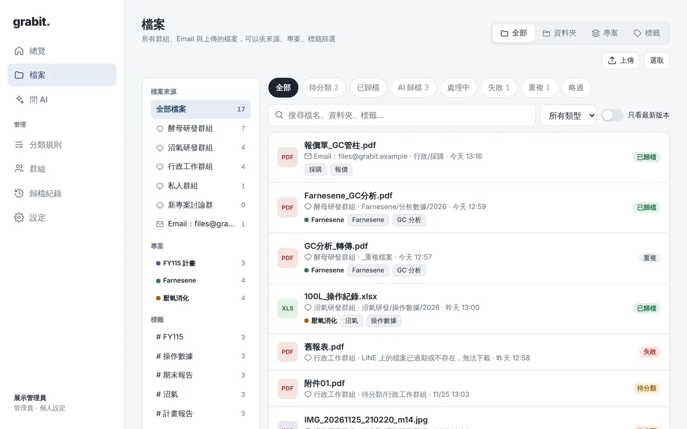

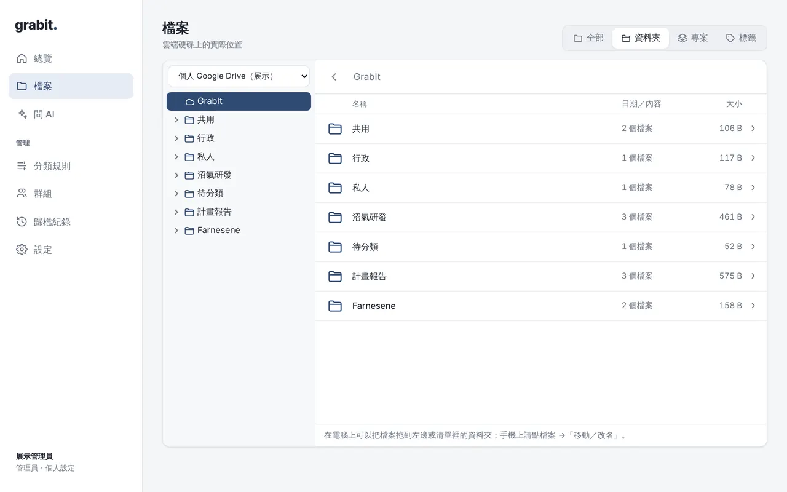
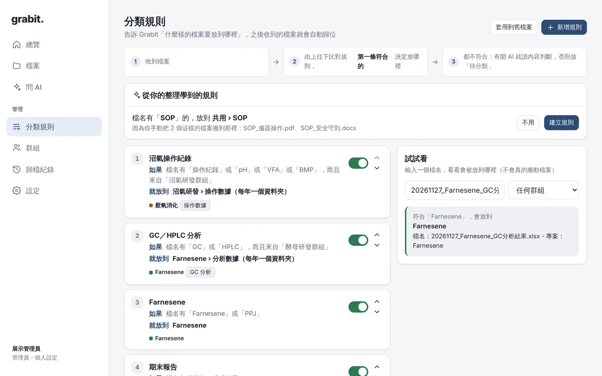
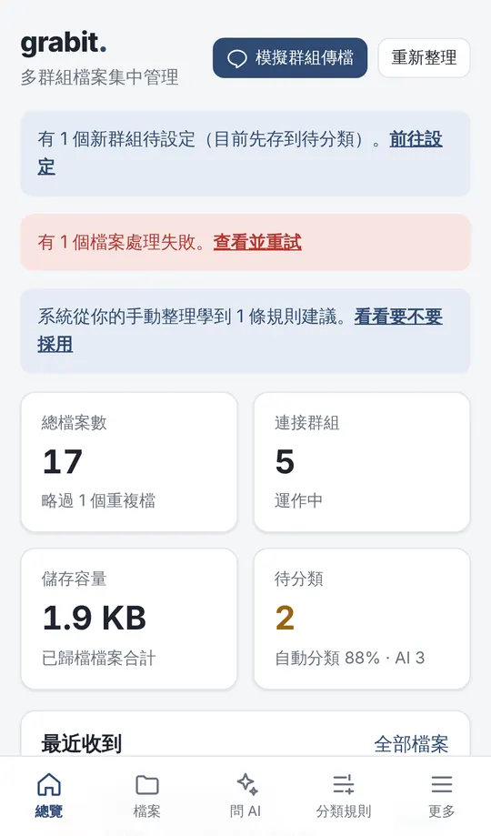
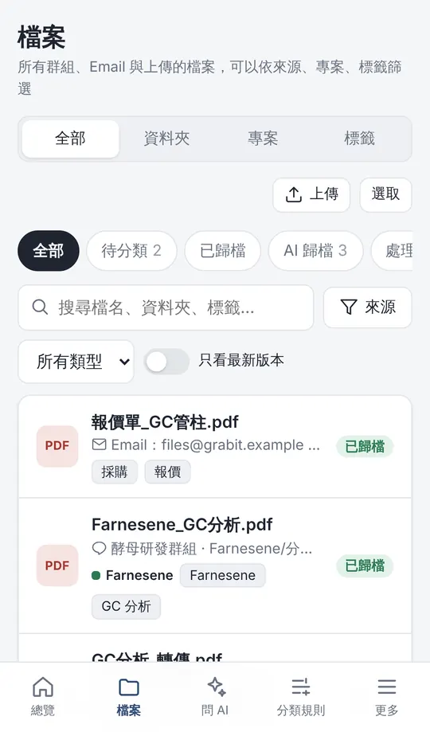
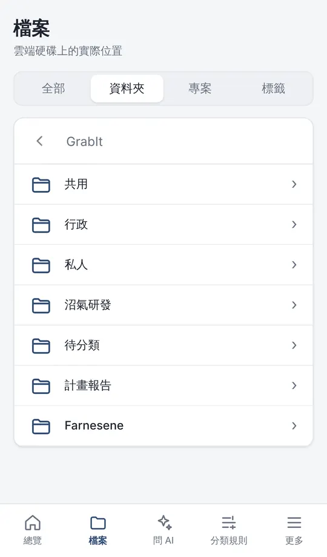
先搞懂：要用到哪些帳號？
把 GrabIt 想成「開一間自己的收發室」：
| 服務 | 用誰的 | 存了什麼 |
|---|---|---|
| GitHub | 你的 | 你那一份 GrabIt 的程式碼 |
| Cloudflare | 你的 | 網站、資料庫（檔案清單、規則、成員、登入紀錄） |
| 你的 | 登入用的 OAuth 用戶端；檔案存在你的雲端硬碟 | |
| LINE | 你的 | 你自己的官方帳號（Bot） |
| AI | 你的 | 預設用你 Cloudflare 帳號裡免費的 Workers AI；選用 Gemini 或 Claude 時也是你自己的金鑰 |
原作者只提供程式碼，看不到你的檔案、成員或任何設定，也不會收到你的資料。你們兩份 GrabIt 唯一的關聯是第 12 步的「更新」：你按更新時，會去原作者公開的程式碼倉庫下載新版程式碼，就這樣。
- 一個 Google 帳號（Gmail）：之後用它登入 GrabIt，檔案也存在它的雲端硬碟
- 手機上有 LINE（用來把 Bot 加好友、拉進群組）
- 一台電腦（手機或平板也可以，但後台按鈕很難找）
- 一個記事本：過程中會拿到 4 把「鑰匙」，先暫時貼在記事本，第 6 步用完就刪掉
1. 申請 GitHub 帳號 約 5 分鐘
已經有 GitHub 帳號的話，登入後直接跳到第 2 步。
依序填 Email、密碼、使用者名稱（只能用英文、數字和減號），按 Continue 或 Create account。
做完小驗證（選圖片之類），去信箱收驗證碼填回網頁。問卷可以按 Skip personalization 跳過，方案選免費（Free）。
2. 申請 Cloudflare 帳號 約 3 分鐘
打開 dash.cloudflare.com/sign-up，填 Email 和密碼，按 Sign up（註冊）。
去信箱點 Cloudflare 寄來的驗證連結。
workers.dev 網址。不用綁信用卡，免費方案就夠了。3. 一鍵複製並部署 GrabIt 約 10 分鐘
這一步會做三件事：把 GrabIt 的程式碼複製一份到你的 GitHub、在你的 Cloudflare 建好資料庫和佇列、把網站架起來。全部由一個按鈕完成。
確定 GitHub 和 Cloudflare 都已經登入，按下面的按鈕：
按鈕打不開的話，複製這個網址貼到瀏覽器：
https://deploy.workers.cloudflare.com/?url=https://github.com/antony910911/grabit第一次用會要你連接 GitHub：按 Connect GitHub（或 Git account 旁的連接），在 GitHub 的頁面選你的帳號、選 All repositories，按 Install & Authorize。這是讓 Cloudflare 可以在你的 GitHub 建立倉庫、每次更新時自動部署。
回到部署頁，會看到一張設定表。全部保持預設值就好，直接按最下面的 Create and deploy（建立並部署）。
等 2～5 分鐘，畫面會顯示建置的進度。看到成功的訊息後，會有一個 https://grabit.你的子網域.workers.dev 的網址，這就是你的 GrabIt。
把這個網址填到這份教學最上面的框框，然後在瀏覽器打開它。
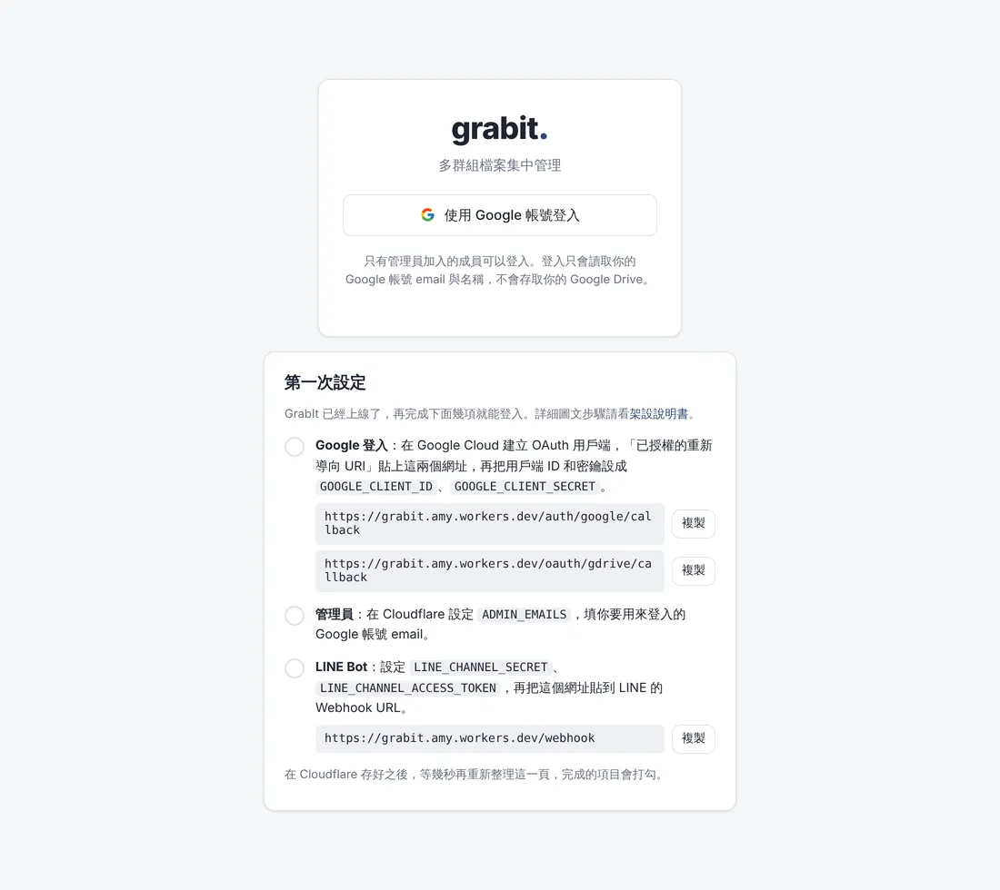
4. 設定 Google 登入與雲端硬碟 約 15 分鐘
這一步是在 Google 申請一張「門禁卡」（OAuth 用戶端），讓 GrabIt 可以用 Google 帳號登入、把檔案存進你的雲端硬碟。Google 的後台可能是中文或英文，下面兩種名稱都會寫。
4-1 建立 Google Cloud 專案
用你的 Gmail 打開 console.cloud.google.com/projectcreate。第一次會要你同意服務條款，勾選後按 同意並繼續。
專案名稱填 GrabIt，其他不用改，按 建立（Create）。等幾秒，右上角的通知出現後，按 選取專案（Select project）。
4-2 打開 Google Drive API
打開 Google Drive API 的頁面（或在最上面的搜尋框輸入 Google Drive API）。
按藍色的 啟用（Enable）。
4-3 設定登入畫面（OAuth 同意畫面）
打開 Google Auth Platform（Google 驗證平台），按 開始（Get started）。
照順序填，每一段填完按 下一步（Next）：
- 應用程式資訊（App Information）：應用程式名稱填
GrabIt，使用者支援電子郵件選你的 Gmail。 - 目標對象（Audience）：選 外部（External）。
- 聯絡資訊（Contact Information）：填你的 Gmail。
- 完成（Finish）：勾選同意政策，按 繼續，再按 建立（Create）。
4-4 發布應用程式（很重要）
左邊選單點 目標對象（Audience）。
「發布狀態」（Publishing status）底下按 發布應用程式（Publish app），跳出確認視窗再按 確認（Confirm）。
4-5 建立用戶端，拿到兩把鑰匙
左邊選單點 用戶端（Clients），按 建立用戶端（Create client）。
應用程式類型選 網頁應用程式（Web application），名稱填 GrabIt。
找到 已授權的重新導向 URI（Authorized redirect URIs），按 新增 URI（Add URI）兩次，分別貼上這兩個網址：
https://grabit.你的子網域.workers.dev/auth/google/callbackhttps://grabit.你的子網域.workers.dev/oauth/gdrive/callback第一個是「登入 GrabIt」用的，第二個是「授權 GrabIt 存檔到雲端硬碟」用的。也可以從你的 GrabIt 登入頁「第一次設定」那張清單直接複製。
按 建立（Create）。畫面會顯示 用戶端 ID（Client ID，.apps.googleusercontent.com 結尾）和用戶端密鑰（Client secret，GOCSPX- 開頭）。兩個都複製到記事本，或按 下載 JSON 存起來。
5. 建立 LINE Bot 約 10 分鐘
GrabIt 的 Bot 其實是一個 LINE 官方帳號。個人用的免費方案就夠了：GrabIt 只「收」訊息、用「回覆」通知，不會用到要付費的主動推播額度。
5-1 建立 LINE 官方帳號
打開 LINE Developers，按 Log in with LINE account，用你的 LINE 帳號登入（掃 QR Code 或輸入 Email、密碼）。第一次會要你填開發者名稱和 Email，按 Create my account。
按 Create a new provider（建立 Provider），名稱填 GrabIt，按 Create。
在這個 Provider 裡選 Create a Messaging API channel。LINE 會帶你去建立 LINE 官方帳號的表單：帳號名稱填 GrabIt（之後群組裡會看到這個名字，可以取你喜歡的），填 Email、選地區和業種（隨便選一個接近的），送出。
建好之後打開 LINE Official Account Manager（官方帳號管理後台），點剛剛建立的帳號 → 右上角 設定 → 左邊 Messaging API → 按 啟用 Messaging API，選剛剛建的 Provider GrabIt，按 確定。
5-2 讓 Bot 可以進群組、關掉自動回覆
一樣在官方帳號管理後台的 設定 → 帳號設定，找到 加入群組或多人聊天室，選 接受邀請加入群組或多人聊天室。（有些版本這個選項在「功能切換」底下）
左邊點 回應設定，把 自動回應訊息 和 加入好友的歡迎訊息 都關掉，Webhook 打開。不然 Bot 每收到一則訊息，就會在群組裡回一句「感謝您的訊息」。
5-3 拿到 LINE 的兩把鑰匙
回到 LINE Developers → 點 Provider GrabIt → 點你的官方帳號（channel）。
在 Basic settings 分頁往下找到 Channel secret，複製到記事本。
切到 Messaging API 分頁，拉到最下面的 Channel access token (long-lived)，按 Issue（發行），把出現的一長串複製到記事本。
6. 把鑰匙交給你的 GrabIt 約 5 分鐘
把剛剛拿到的四把鑰匙，加上「誰是管理員」，存進 Cloudflare。這些東西只存在你的 Cloudflare 帳號裡，不會出現在 GitHub 的程式碼中。
打開 Cloudflare 後台 → 左邊 Workers & Pages → 點 grabit → 上面的 Settings（設定）分頁 → 找到 Variables and Secrets（變數和密碼）。
按 + Add（新增），一次加一個。Variable name（名稱）照抄，大小寫、底線都要一樣；Type（類型）照下表選：
| Variable name（照抄） | Type | Value（貼上） |
|---|---|---|
ADMIN_EMAILS | Text | 你要用來登入 GrabIt 的 Gmail，例如 amy@gmail.com。多個管理員用逗號隔開。 |
GOOGLE_CLIENT_ID | Secret | Google 的用戶端 ID |
GOOGLE_CLIENT_SECRET | Secret | Google 的用戶端密鑰 |
LINE_CHANNEL_SECRET | Secret | LINE 的 Channel secret |
LINE_CHANNEL_ACCESS_TOKEN | Secret | LINE 的 Channel access token |
全部加好後按 Deploy（部署，有的畫面叫 Save）。Cloudflare 會用新的設定重新上線，大約 10 秒。
回到你的 GrabIt 網址，重新整理頁面。
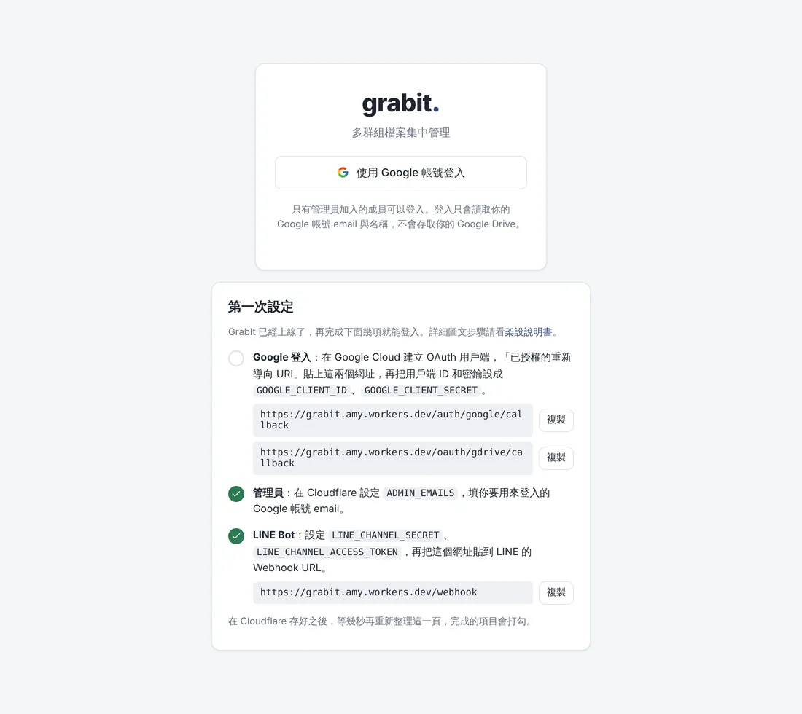
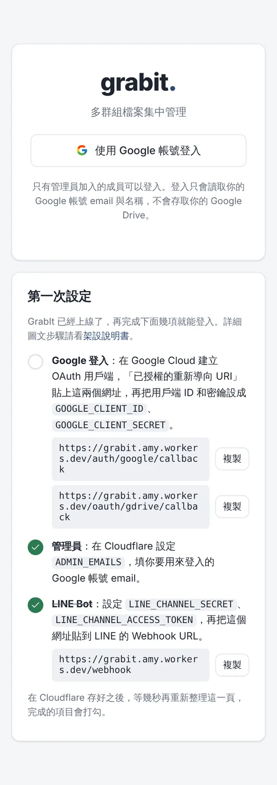
還在的話，看清單上哪一項沒打勾，回去檢查那個名稱有沒有打錯。
7. 把 LINE 接到 GrabIt 約 3 分鐘
告訴 LINE：「群組裡有人傳東西時，通知這個網址」。
回到 LINE Developers → 你的 channel → Messaging API 分頁 → Webhook settings。
Webhook URL 按 Edit，貼上這個網址，按 Update：
https://grabit.你的子網域.workers.dev/webhook按 Verify，然後把 Use webhook 的開關打開。
8. 第一次登入、連接雲端硬碟 約 5 分鐘
打開你的 GrabIt，按 使用 Google 帳號登入，選你填在 ADMIN_EMAILS 的那個 Gmail。
登入後，左邊選單點 設定 → 上面的 雲端空間 分頁 → 右上角 + 新增空間。
選 Google Drive，顯示名稱隨便取（例如「我的 Google Drive」），根目錄名稱保持 GrabIt，選一種分享方式，按 新增並前往授權。
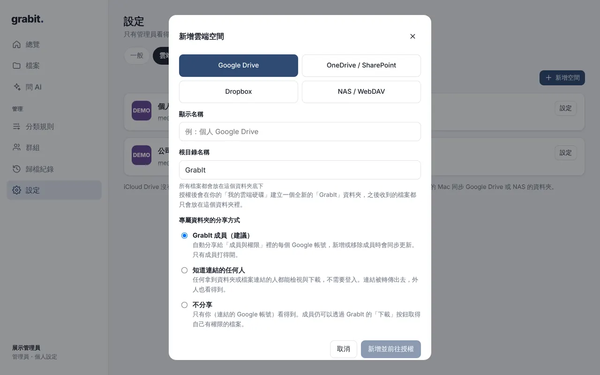
Google 會問你是否允許 GrabIt 存取雲端硬碟，按 繼續／允許。GrabIt 只能看到和管理它自己建立的檔案，碰不到你雲端硬碟裡其他的東西。
9. 把 Bot 拉進群組試試看 約 5 分鐘
先加 Bot 好友：在 LINE Developers 的 Messaging API 分頁最上面有一個 QR code，用手機 LINE 掃描，加入好友。
拉進群組：打開你要收檔案的 LINE 群組 → 右上角 ≡ → 邀請，從好友裡選 GrabIt 的 Bot。一個 Bot 可以加入很多個群組。
在群組裡傳一個檔案（PDF、Word、Excel 都可以）。
回到 GrabIt 的 群組 頁，會看到這個群組，旁邊標著「待設定」。按 開始設定，可以幫群組取名字、選要收哪些檔案類型、照片影片要不要備份、要不要在 LINE 回覆「已歸檔」。
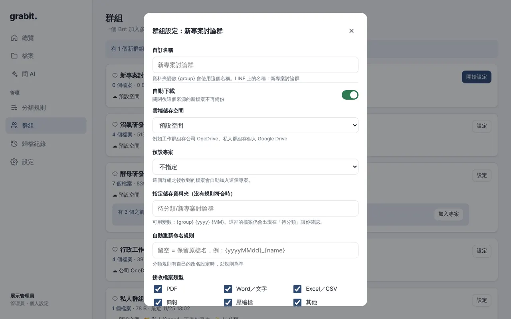
10. 邀請成員 選用
想讓同事、家人也能看檔案？GrabIt 只讓「管理員加入的人」登入，別人就算拿到網址也進不來。
設定 → 成員與權限 → 輸入對方的 Google 帳號 email，選角色和可以看的群組，按新增。
- 檢視者：只能看、下載、搜尋被授權的群組的檔案。
- 編輯者：還可以搬移、改名、設定分類規則。
- 管理員：全部都能做，包括雲端空間、成員和系統設定。
把你的 GrabIt 網址傳給他，請他用那個 Google 帳號登入。手機上可以用瀏覽器的「加入主畫面」，就像一般 App。
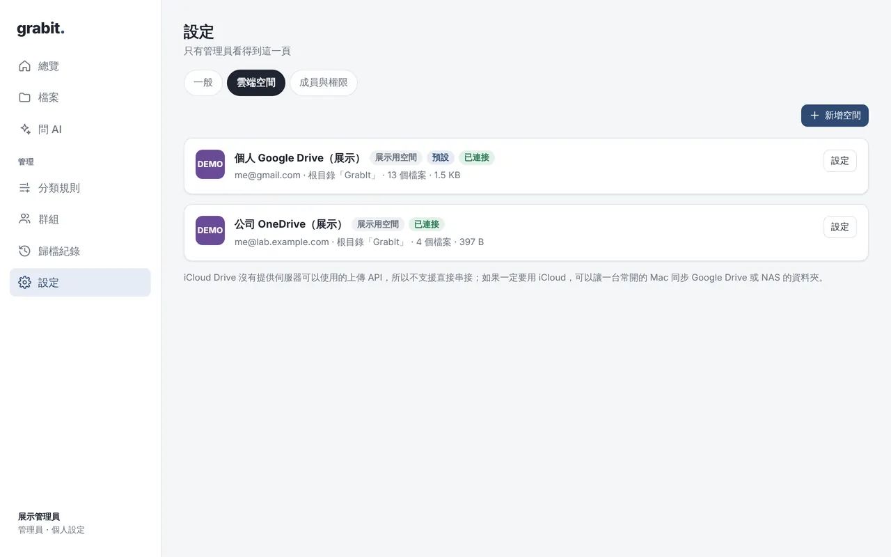
11. AI 讀內容分類 免費・已經開著
GrabIt 預設用 Cloudflare 的 Workers AI 讀檔案內容：產生摘要和標籤，檔名規則判斷不了的檔案，AI 會建議該放哪個資料夾。它跑在你自己的 Cloudflare 帳號裡，不用申請金鑰、不用付費，第 3 步部署好就已經開著了。
- 免費額度：每天大約可以分析 50～100 份文件（文件越長用得越多）。用完就暫停到隔天早上 8 點（台灣時間），檔案照常歸檔，沒分析到的之後自動補做。不會自動改用付費模型。
- 先歸檔、再分析：檔案會先照群組和規則存好，AI 是之後才在背景跑的。AI 出錯也不會讓檔案不見。
- 不會亂搬：只有把握度夠高（預設 85%）、而且是已經存在的資料夾，AI 才會自動搬。其他的會出現在 檔案 → AI 待確認，由你按「採用建議」、「編輯」或「略過」。
- 讀得到什麼：Word、Excel、簡報、PDF 的文字都讀得到（掃描的 PDF 可能讀不到字）；照片只會依檔名判斷。
- 問 AI：左邊選單的 問 AI 可以用一句話找檔案，例如「上個月 Farnesene 的 GC 分析在哪？」。一樣是免費的，和檔案分析共用每天的額度。
（選用）改用 Gemini 免費版
Gemini 可以直接讀 PDF 和照片，判斷通常更準，也是免費的。但要注意：Gemini 免費版會用你送出去的內容來改善 Google 的產品，所以 GrabIt 預設只會把「你勾選允許的群組」的檔案送過去。
打開 Google AI Studio 的 API 金鑰頁，用你的 Gmail 登入，按 Create API key（建立 API 金鑰），選一個沒有開啟付款（Billing）的專案，複製金鑰。
照第 6 步的方式，在 Cloudflare 加一個 Secret，值貼上金鑰，按 Deploy：
GEMINI_API_KEYGrabIt 的 設定 → 一般 → AI 文件判讀，引擎選 Gemini 免費 API，按 儲存 AI 設定。
到 群組，對可以送出去的群組按 設定，打開「允許送交外部 AI（Gemini 免費版）」。公司機密、個資的群組請不要打開。
ANTHROPIC_API_KEY，改用 Claude 判讀（依用量付費），還可以用「問 AI」一句話查檔案。12. 之後怎麼更新到新版 約 3 分鐘
原作者加了新功能，你的 GrabIt 不會自動跟著變（因為是你自己的一份）。想更新的時候：
登入 GitHub，打開你自己的 grabit 倉庫，點上面的 Actions 分頁。
左邊點 更新 GrabIt 到最新版，右邊按 Run workflow，再按跳出來的綠色 Run workflow。
等它出現綠色勾勾 ✅（約 1 分鐘）。接著 Cloudflare 會自動重新部署（約 3 分鐘，可以在 Cloudflare 的 grabit → Deployments 看進度），然後重新整理 GrabIt 就是新版了。
13. 請 Claude 幫你改功能 進階・選用
想多一個功能、換個樣子？直接用中文跟 Claude 說，它會改好你自己的那一份，推上 GitHub 後 Cloudflare 會自動部署。
打開 claude.ai/code，登入 Claude 帳號（需要付費方案），照畫面連接 GitHub，選你自己的 grabit 倉庫。
用平常說話的方式描述你要什麼，例如：
我想讓 GrabIt 收到 Excel 檔案時，在 LINE 群組回覆一句「已存到 XX 資料夾」，其他檔案不要回覆。改好之後幫我推上去，讓 Cloudflare 自動部署。卡住了怎麼辦
按 Deploy to Cloudflare 後說找不到倉庫（Repository not found）
原作者的 GrabIt 倉庫需要是公開的，按鈕才能複製。請告訴分享這份教學給你的人。
部署失敗、出現紅色叉叉（Build failed）
點進那一筆看紀錄（Build log）最後幾行。常見的是網路一時不穩，到 Cloudflare 的 grabit → Deployments（或 Settings → Builds）按 Retry build 重試一次。還是不行，把最後 20 行連同下面的範本一起問 Claude。
登入頁一直顯示「第一次設定」，或說「還沒設定 Google 登入」
看清單上哪一項沒打勾：回到第 6 步，檢查那個名稱有沒有打錯（例如 GOOGLE_CLIENT_ID 不能有空白、要全部大寫）、有沒有按 Deploy。存好後等 10 秒再重新整理。
Google 顯示「錯誤 400：redirect_uri_mismatch」
第 4-5 步的「已授權的重新導向 URI」和你的網址不完全一樣。檢查：開頭是 https://、中間是你的子網域、最後是 /auth/google/callback 或 /oauth/gdrive/callback，結尾沒有斜線。改完要等幾分鐘才會生效。
Google 說「存取遭封鎖」或「只有測試人員可以使用」
應用程式還在「測試中」。照第 4-4 步按「發布應用程式」。
登入時說「這個 Google 帳號還不是 GrabIt 成員」
你登入用的 Gmail 和 ADMIN_EMAILS 填的不一樣。到 Cloudflare 的 Variables and Secrets 檢查拼字（可以多個，用逗號隔開），或登入時換選另一個 Google 帳號。其他成員要由管理員在「成員與權限」加入。
LINE 的 Verify 失敗
依序檢查：網址最後是 /webhook；第 6 步的 LINE_CHANNEL_SECRET 是 Basic settings 分頁的 Channel secret（不是 access token）；存好後有按 Deploy。等 30 秒再按一次 Verify。
邀請群組時找不到 Bot，或 Bot 進不了群組
要先加 Bot 好友（第 9 步的 1）。還是不行，回到第 5-2 步確認「接受邀請加入群組或多人聊天室」有選。
Bot 在群組裡回「感謝您的訊息！很抱歉…」
自動回應訊息沒關掉。照第 5-2 步的 2，把「自動回應訊息」關掉。
傳了檔案，GrabIt 裡沒有出現
- LINE Developers 的 Use webhook 是不是開著（第 7 步）。
- GrabIt 的 歸檔紀錄 有沒有紅色的錯誤，上面會寫原因。
- 有沒有連接雲端硬碟（第 8 步）。沒連接時檔案會顯示「失敗」，連接後在檔案頁按 重試。
- 這個群組的設定是不是把這種檔案類型關掉了（例如照片）。
雲端硬碟出現「Google Drive API has not been used in project…」
第 4-2 步的 Google Drive API 沒有啟用（或啟用在別的專案）。確認上方選的是 GrabIt 專案，再按一次啟用，等幾分鐘後在 GrabIt 按重試。
大約一週後，檔案突然存不進雲端硬碟
Google 應用程式還在「測試中」，授權 7 天就過期。照第 4-4 步發布，然後到 GrabIt 的 設定 → 雲端空間 重新授權一次。
AI 判讀顯示「延後分析」或「今天的免費額度已用完」
今天的免費額度用完了，GrabIt 會暫停到額度重置（Workers AI 是台灣時間早上 8 點，Gemini 是美西午夜），之後自動補做，檔案本身都已經歸檔好。想讓重要的檔案先分析，可以在檔案資訊按 重新分析；想多分析幾份，可以在 設定 調高每日上限，但 Workers AI 免費版每天最多 10,000 Neurons。
按「更新 GrabIt 到最新版」出現紅色叉叉
點進去看是哪一步失敗。如果訊息提到 permission 或 403：到你的 GitHub 倉庫 Settings → Actions → General，最下面的 Workflow permissions 選 Read and write permissions，按 Save，再跑一次。
把問題丟給 Claude
還是卡住的話，把下面這段複製到 claude.ai 的對話框，把【】換成你的狀況，最好再附一張截圖：
我是完全不會寫程式的新手，正在照教學架設 GrabIt（一個 LINE Bot，會把群組裡的檔案存到 Google 雲端硬碟）。它用 Deploy to Cloudflare 按鈕從 GitHub 的 antony910911/grabit 複製一份，跑在 Cloudflare Workers（D1 資料庫、Queues），用 Google OAuth 登入，密鑰設在 Cloudflare 的 Variables and Secrets（ADMIN_EMAILS、GOOGLE_CLIENT_ID、GOOGLE_CLIENT_SECRET、LINE_CHANNEL_SECRET、LINE_CHANNEL_ACCESS_TOKEN）。
我做到【第幾步、在做什麼】，畫面顯示【貼上畫面上的文字或附截圖】。
請用簡單的中文，一步一步告訴我下一步要按哪裡。- GitHub 上有你自己的 grabit 倉庫
- Cloudflare 的 grabit 有五個設定：
ADMIN_EMAILS、GOOGLE_CLIENT_ID、GOOGLE_CLIENT_SECRET、LINE_CHANNEL_SECRET、LINE_CHANNEL_ACCESS_TOKEN - Google 的應用程式是「實際運作中」，不是「測試中」
- LINE 的 Webhook 按 Verify 是 Success，Use webhook 開著，自動回應關著
- GrabIt 的雲端空間顯示已連接，雲端硬碟裡有 GrabIt 資料夾
- 在群組傳一個檔案，幾秒內出現在 GrabIt 的檔案頁
- 記事本裡的鑰匙已經刪掉